- Módulo: Sistemas Operativos
- Título del trabajo Autenticación LDAP
- Componentes del grupo: Carlos Santos Carballo
- Curso Académico: 2014/2015
- Fecha de entrega: 10 de Octubre de 2015
Antes de comenzar es necesario ver la configuración de red de la máquina virtual cliente que vayamos a utilizar,en nuestro caso LUbuntu 14. Una vez revisado esto,empezaremos con nuestra práctica.
Como primer paso ejecutaremos el comando apt-get install libpam-ldap y configuraremos dicha libreria.
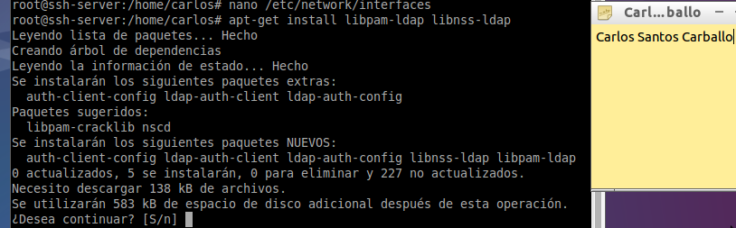Indicamos la URI o dirección para acceder al servidor LDAP; el formato es ldap://dirección:puerto.
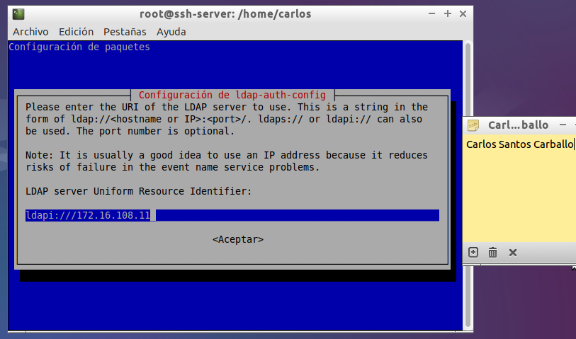Especificamos la base del directorio LDAP y aceptamos.
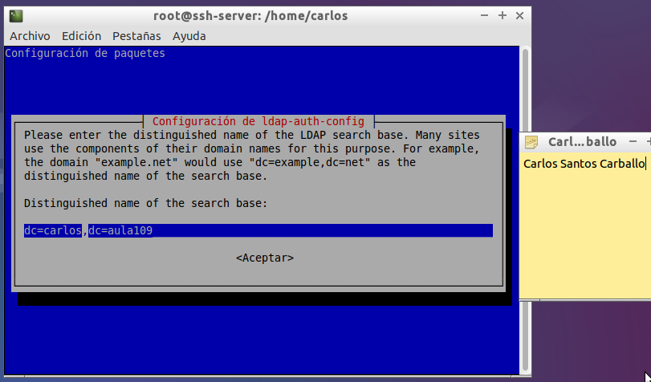Establecemos la versión del protocolo LDAP
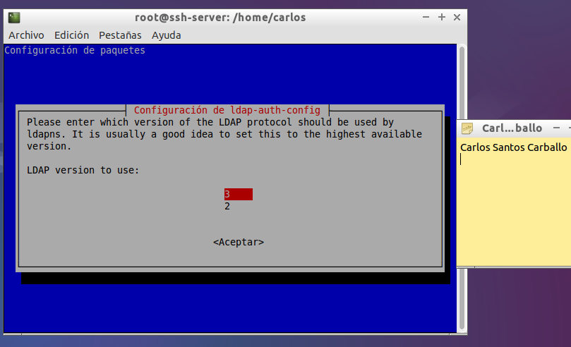Indicamos “Sí”, de forma que el usuario “root” podrá cambiar las contraseñas de los usuarios del directorio LDAP del mismo modo en que cambia las contraseñas de los usuarios locales.
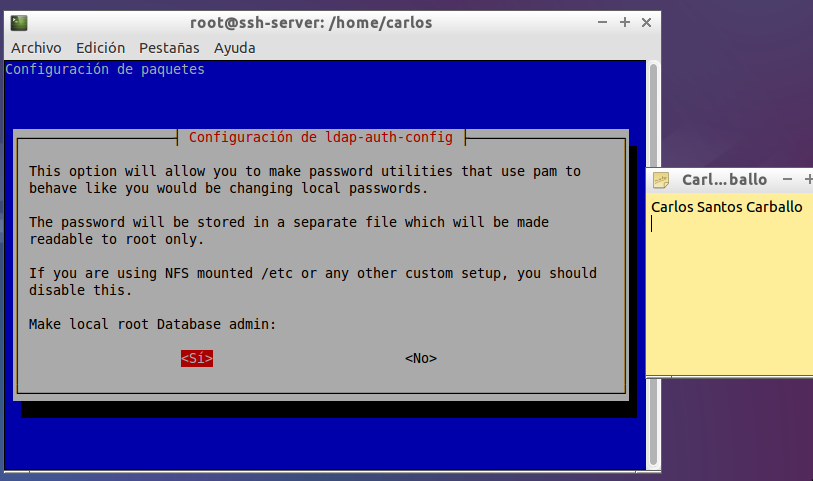Seleccionamos que “No”, indicando en este caso que no es necesario autenticarse (login) para consultar el directorio LDAP (esto es, que permite el acceso anónimo).
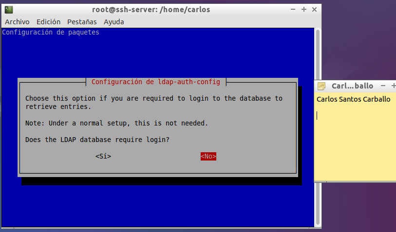Indicamos la cuenta del administrador del servidor LDAP, de forma que los cambios de contraseña realizados por el administrador del sistema “root” se puedan actualizar en el directorio LDAP
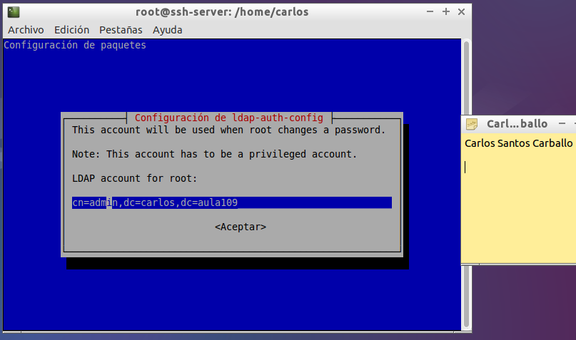Indicamos la contraseña del administrador del directorio LDAP
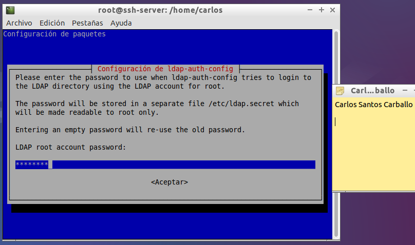A continuación vamos al fichero ldap.conf para modificar algunos parámetros que nos faltan por ajustar.
En la línea host ponemos nuestra ip del servidor LDAP,también modificamos la línea "base".
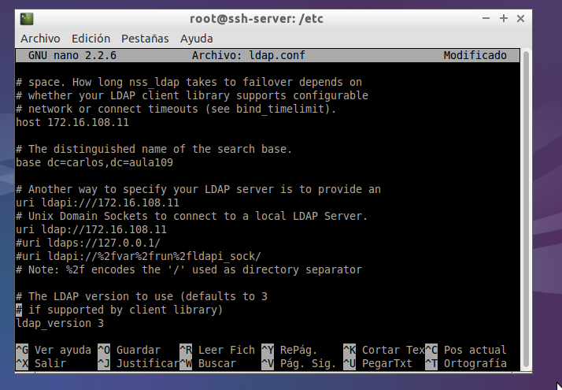Descomentamos la línea donde nos define el puerto y modificamos la línea "rootbinddn".
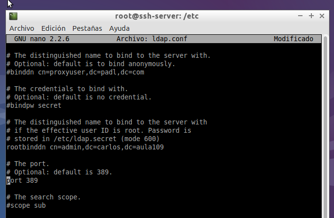Ahora modificamos las lineas nss_base_passwd,nss_base_shadow y nss_base_group.
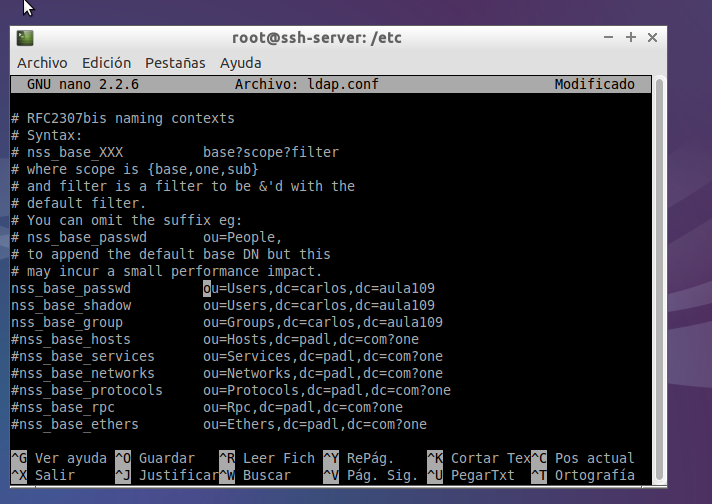A continuación maccedemos al fichero nsswitch.conf y modificamos las líneas passwd,group y shadow.
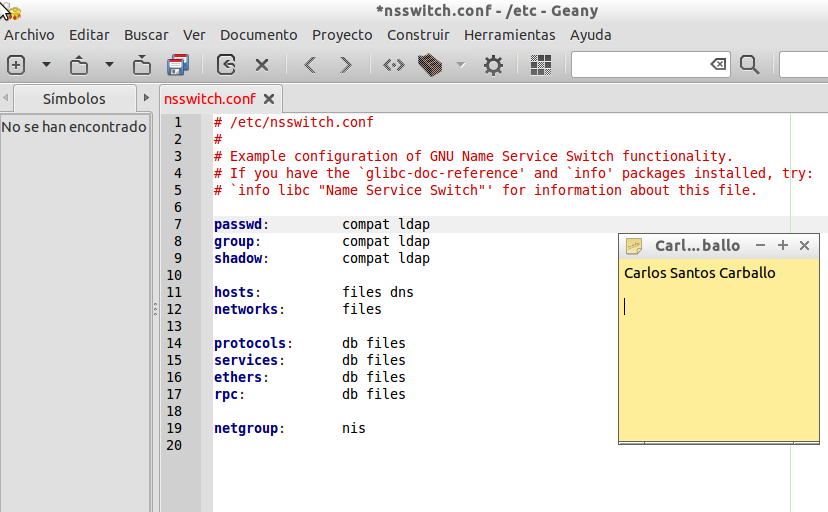Como siguiente paso accederemos al fichero common-auth y ponemos lo siguiente "auth sufficient pam_ldap.so".
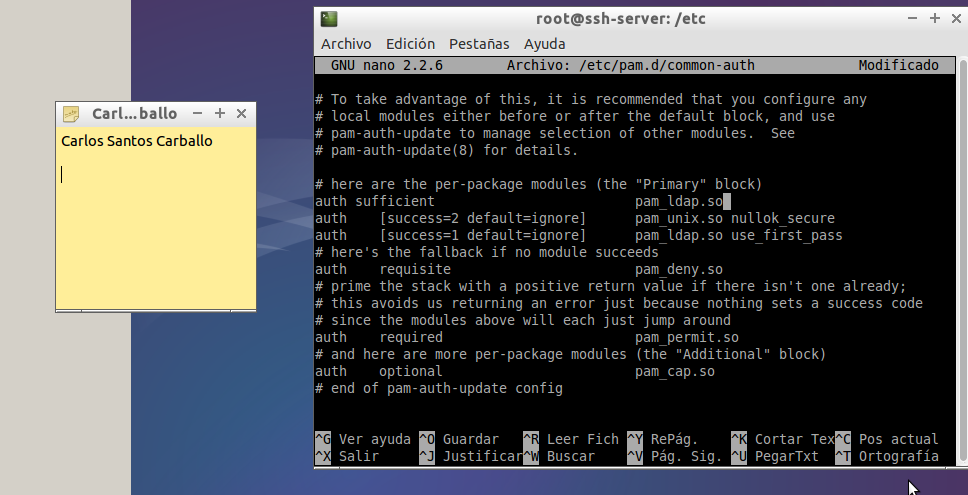Realizamos el mismo paso con el fichero common-account "account sufficient pam_ldap.so"
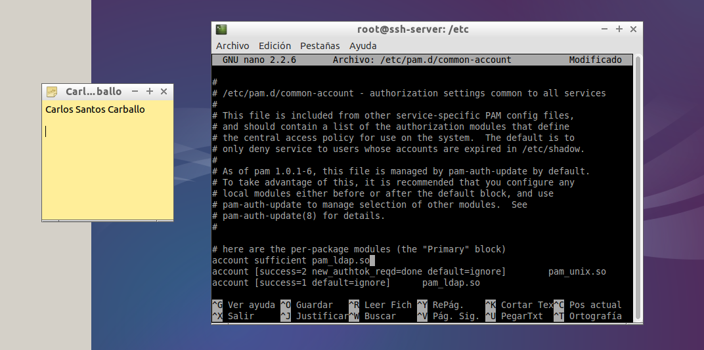En common-session "session sufficient pam_ldap.so"
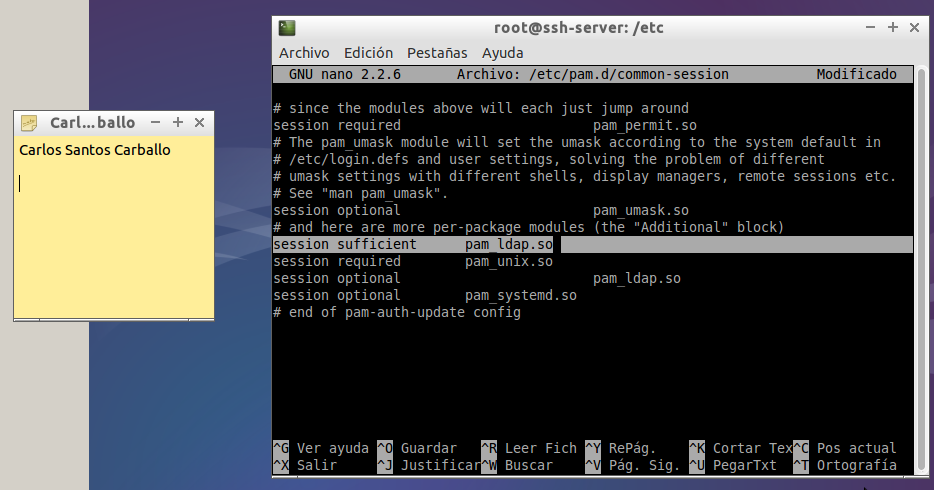Lo mismo en common-password "password sufficient pam_ldap.so"
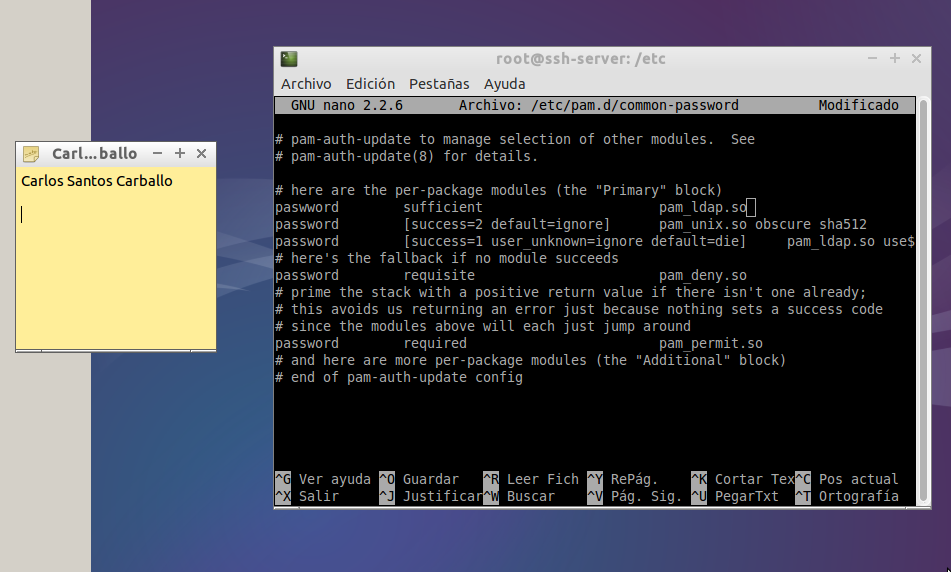Para finalizar la configuración de estos ficheros accederemos al fichero common-session y ajuntamos la siguiente línea "session required pam_mkhomedir.so skel=/etc/skel umask=0022"
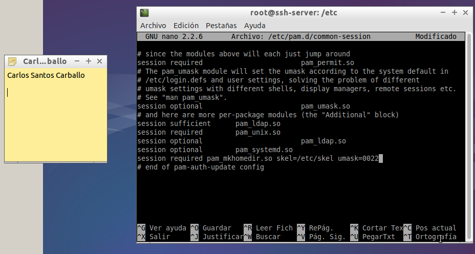Una vez terminado todo esto deberíamos poder acceder desde el cliente sin ningún problema y poder acceder al servidor LDAP,pero me da un error y la máquina virtual cliente no me arranca y no he encontrado forma para solucionarlo.